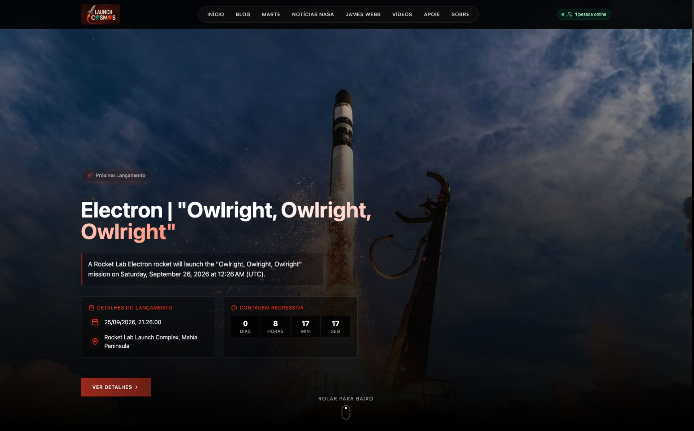

01WEB PLATFORM

LaunchToCosmos
A complete experience for following space exploration.
A Portuguese-language portal bringing together launches, official broadcasts, news, Mars imagery and space exploration content.
Visit project ↗